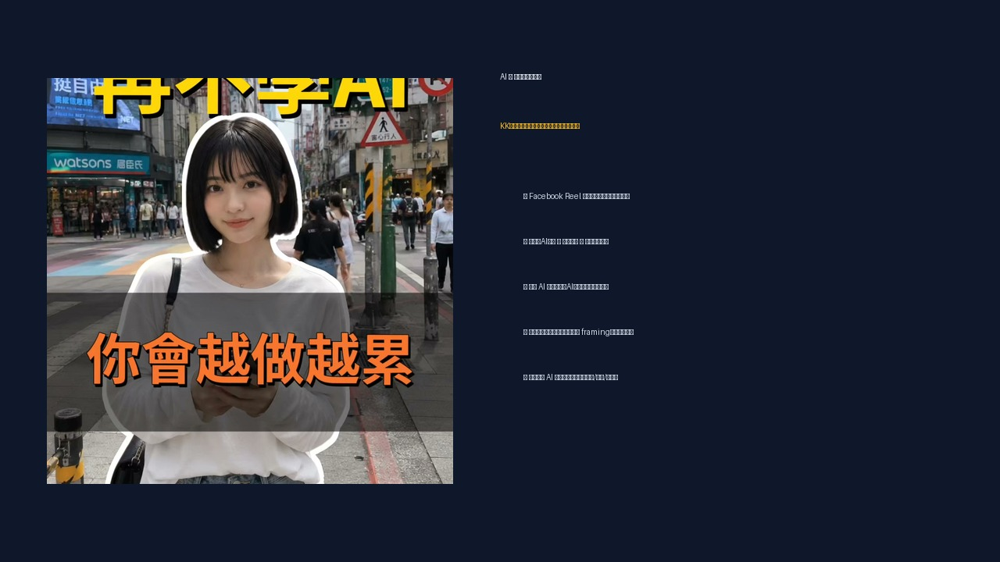
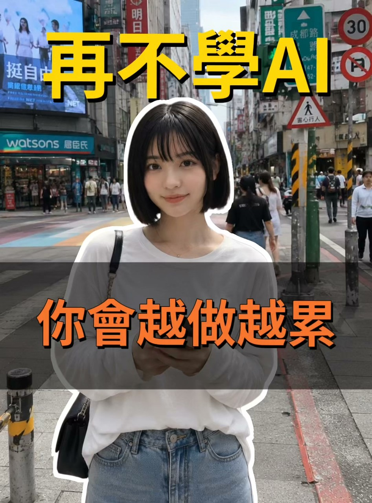

Facebook Reel｜KK老師：AI 流量 × 直播帶貨說明會的「一支手機抵整個團隊」行銷案例

為什麼保存
這支 Facebook Reel 是典型的 2026 年 AI 教育課程導流素材：用「AI 不只是聊天工具，而是個人變現系統」作為主軸，把內容生成、AI 分身、客服自動化與直播帶貨包裝成「一支手機抵整個團隊」。
它值得放進 AI 學習雷達，不是因為本文認可「學了就能賺錢」，而是因為它很清楚呈現 AI 課程市場正在如何把工具能力轉譯成商業敘事：節省人力、提高產能、個人品牌、直播成交、自動化漏斗。

可見資訊
Facebook Reel 解析到的 canonical 為：
- 來源：電商直播培訓教母 KK老師
- Reel ID：1392471466276360
- 可見互動：og:title 顯示約 575 個心情、86 次分享；頁面文字另顯示 36。
- 導流連結：`https://sedu.tw/nTVgq`
- 導流頁最終網址：啟程教育學院「超級帶貨，個體崛起！」活動頁。
導流頁標題為「超級帶貨，個體崛起！」，頁面描述寫道：
> 直播圈知名操盤手「電商直播教母KK老師」，首次公開，90分鐘的線上分享，直接教會你，如何透過「AI流量X直播成交！打造一人也能運作的變現路徑。」
頁面可見報名場次與表單欄位，表示這支 Reel 的主要目的不是單純內容分享，而是把觀眾導到免費線上直播說明會。
文案結構拆解
這支 Reel 的文案可以拆成 5 段：
- **問題開場**：你還在把 AI 當聊天玩具？
- **痛點放大**：拍片、修圖、寫文案、回覆客人都耗時。
- **工具承諾**：圖片與影音一鍵生成、AI 複製人拍內容、客服機器人 24 小時回覆。
- **權威背書**：23 年娛樂經紀與 13 年直播實戰背景的 KK 老師。
- **行動呼籲**：點擊連結，免費報名線上直播說明會。
這是很標準的課程漏斗文案：先製造落後焦慮，再提供工具願景，接著用講師背景降低不信任，最後導向免費說明會。
AI 能力與實務落差
文案提到的能力，大方向符合目前 AI 工具市場趨勢，但落地時不能只看「一鍵」：
| 文案主張 | 實務上要確認 |
|---|---|
| 圖片與影音可以一鍵生成 | 生成品質、品牌一致性、素材授權、改稿成本。 |
| AI 複製人全天候拍攝內容 | 肖像授權、聲音授權、平台 deepfake / AI 標示規範。 |
| 客服機器人 24 小時回覆 | 商品資料庫、退換貨規則、個資保護、錯答責任。 |
| 一支手機抵整個團隊 | 適合小規模 MVP，但商業化仍需企劃、投放、客服、履約。 |
| AI 變成個人賺錢系統 | 取決於流量、選品、轉換率、毛利、廣告成本與持續執行。 |
給欒帥的觀察重點
這類素材值得觀察三件事：
- **AI 教育市場的話術**：從「學工具」轉向「建立賺錢系統」。
- **直播電商的再包裝**：把原本就需要選品、腳本、流量、成交與客服的流程，用 AI 自動化語言重新描述。
- **免費說明會漏斗**：免費直播往往是前端流量入口，後續可能接正式課程、顧問、社群或高單價產品。
風險提醒
- 「用 AI 賺錢」「一支手機抵整個團隊」屬於行銷 framing，不代表收入保證。
- 若使用 AI 複製人、數字分身或聲音克隆，需取得本人授權並標註 AI 生成。
- 直播帶貨涉及選品、廣告投放、平台規範、消保、退貨、客服與金流，不是只靠生成工具即可完成。
- 客服機器人若處理個資、付款、訂單與售後，需明確規範資料保護與錯誤回覆責任。
- 免費說明會後續是否導向付費課程，需看課綱、案例、退款條款與實作支援，不宜只看短影音文案做決策。
適合保存的原因
這則案例可作為「AI 商業教育 / 直播電商課程」的行銷樣本：它把 AI 生成、AI 分身、客服自動化與直播成交合併成一個可銷售敘事。日後比較其他 AI 課程、代理商服務或個人品牌工具包時，可回來對照：它們究竟是在教工具、教流程，還是在販售焦慮與願景。